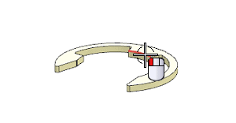
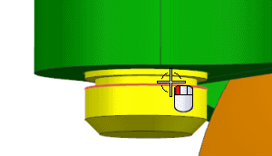
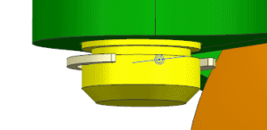
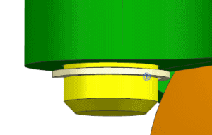

约束一个卡簧(clip)到转轴上
-
点击装配工具条上的装配约束
 。
。 -
从类型列表中，选择同心 。
-
选择如图所示 des03_caster3_eclip_625 的圆弧边。

-
转动模型并选择下图所示的 des03_caster3_shaft 上的圆形边。

-
如果卡簧移动到如图所示的位置，在要约束的几何体组中，点击返回上一个约束
 。(译者注：NX 中的英文原文是 Reverse Last Constraint，在中文中其实应该是反转上一个约束)。
。(译者注：NX 中的英文原文是 Reverse Last Constraint，在中文中其实应该是反转上一个约束)。
-
确认卡簧是在凹槽内。

-
点击应用。